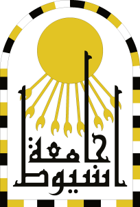
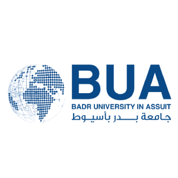

I'm a second-year M.Sc. student, enthusiastic, self-taught computer science graduate, teaching assistant, and software engineer who loves building things from scratch. I'm interested in systems programming, theoretical computer science, and low-level computing.
My research interests are programming languages design & theory, compiler construction, parallel computing, artificial intelligence, and image processing.
Living with ADHD has shaped how I learn and think: I dive deep, follow curiosity wherever it leads, and often find joy in details others overlook.

Assiut University2024-Present
M.Sc. in Computer Science
Faculty of Computers and Information
Assiut University2020-2024
B.Sc. in Computer Science
Faculty of Computers and Information

Badr University in Assiut 2024-Present
Teaching Assistant
School of Artificial Intelligence & Data Management
Teaching assistant for the following courses:
Voyance HealthMay 2024 - Dec. 2024
Software Engineer
Roro8: A Fantasy Computer for Computer Architecture and Organization Education
ACM SIGSE TS 2024
In Learning computer architecture and low-level programming is a complex challenge for beginners. We introduce Roro8, an 8-bit fantasy computer system designed to simplify the learning process while closely mirroring real-world computer systems. Roro8 comprises an 8-bit microprocessor (RX8), memory-mapped I/O, external peripherals, and an external display (RD6448). This unique feature enables students to become familiar with datasheets of devices, a fundamental aspect of hardware programming. The core pedagogical goal is to have students implement an emulator, simulators, assemblers, and compilers, providing a hands-on learning experience. They can create games or see their own programs running on the display, making abstract concepts tangible and engaging. Our work addresses the challenge of teaching computer architecture by offering a novel solution. Unlike conventional system-on-chip designs, Roro8 simplifies the learning process while emphasizing practical engagement. This paper outlines the problem, reviews related work, introduces Roro8, and underscores the significance of our approach in enhancing computer science education.
CodeVisions: Static Code Analysis for Creating Education-Oriented Applications.
ACM SIGSE TS 2024
Simplifying programming for novices and students is a goal for many computer science instructors over the world and an essential concern for computer science education in general. this paper we introduce CodeVisions, a static code analyzer and interpreter that provides testing and assessment mechanisms and generates a detailed trace of code execution. It’s intended to be used to facilitate creating programming tutoring or coding assessing applications (Such as visualizers and auto-graders) through a variety of supported programming languages and flexibility of restricting code inputs. CodeVisions has a testing mechanism that allows users to write their own tests to validate the dump to their rules instead of manually parse the dump themselves resulting a test report too.